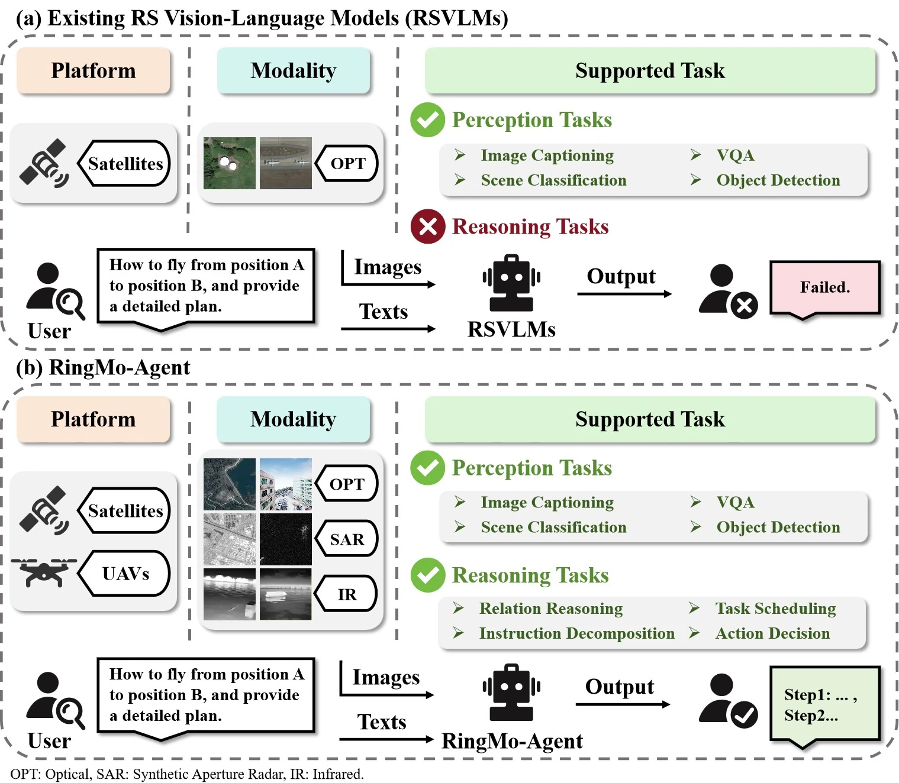
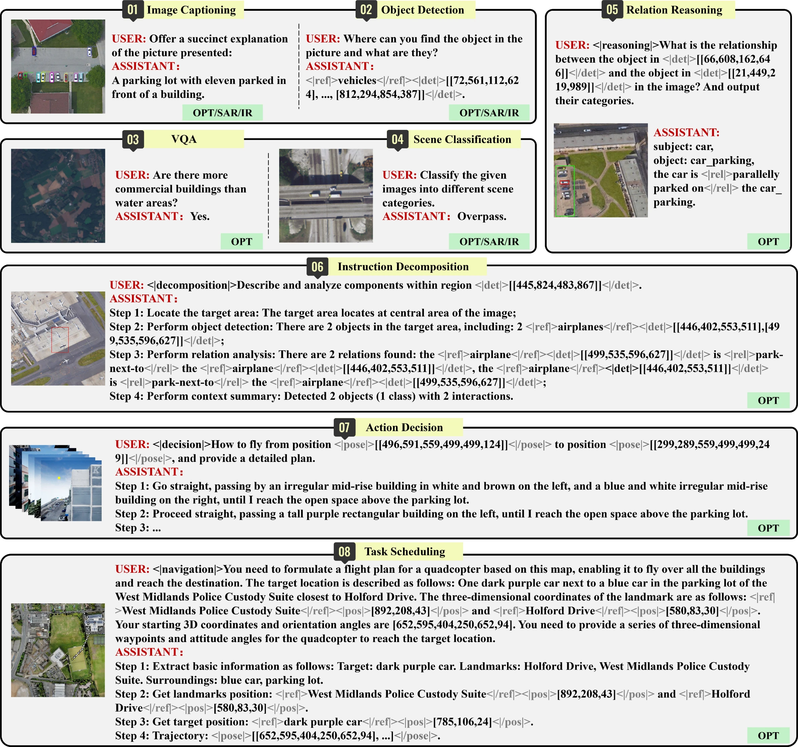
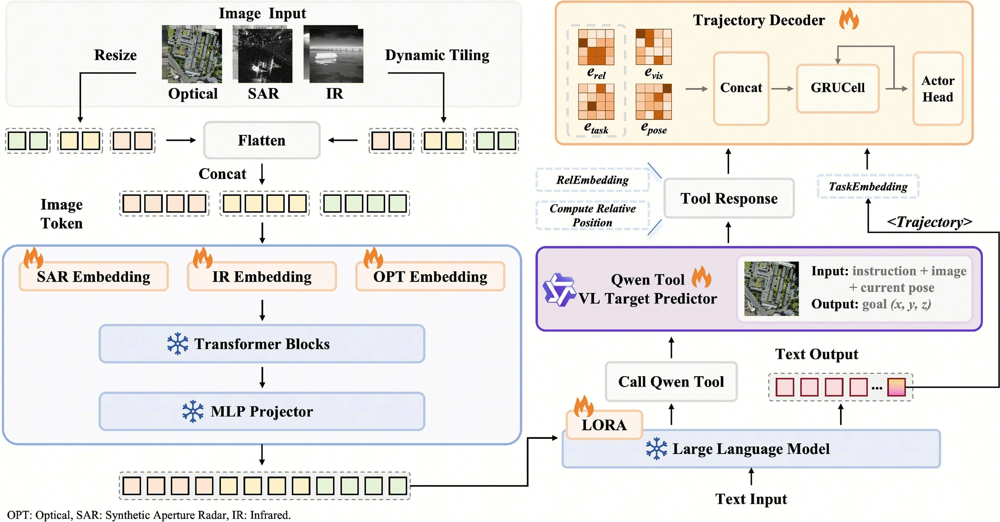
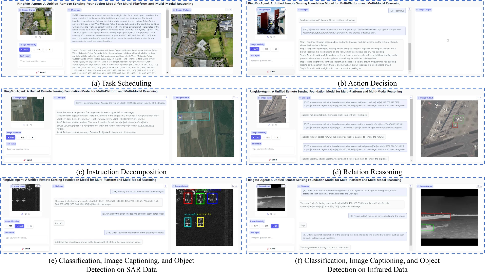
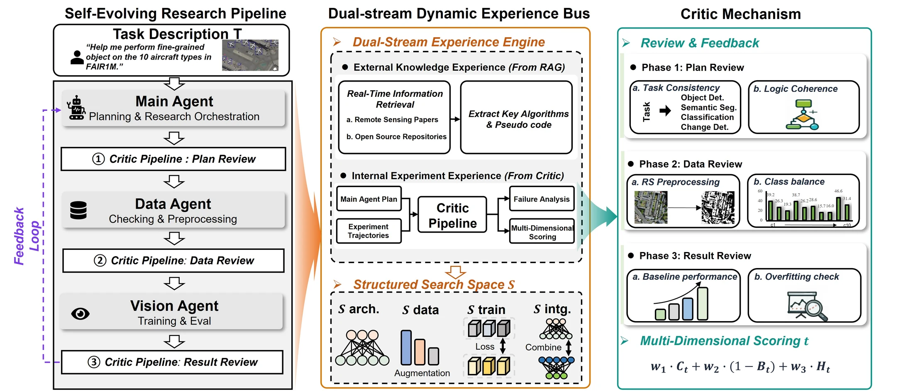

For years the goal was a model that could read a single image. What the work actually asks for is closer to a trained analyst — one that understands the task, reasons across optical, SAR and infrared imagery from satellites and UAVs, calls the tools it needs, and gets better every time it gets something wrong. Two connected efforts: RingMo-Agent builds the ability to see, reason and act; RingMoClaw adds the ability to reflect, learn and improve.
Conventional interpretation runs on one task, one model: a detector for detection, a classifier for classification, another algorithm again for question answering, relation analysis or planning. Faced with a real task, a person still has to hold all of it together.
A trained analyst does not work that way. Handed “find the key targets, work out how they relate, and propose a follow-up check”, they read the task first, then locate, then judge, then decide what happens next. Closing that loop — turning scattered capabilities into one chain a system can carry end to end — is what these two works are for.
One model that reads imagery from different sensors and different viewpoints, reasons about what it sees, and acts on the result.
A team of agents that takes a research task described in plain language and carries it through — then learns from how it went.
Not just seeing — understanding, and acting on what it sees.
RingMo-Agent: A Unified Remote Sensing Foundation Model for Multi-Platform and Multi-Modal Reasoning
Aerospace Information Research Institute, Chinese Academy of Sciences
Real remote sensing data arrives from different satellites, different aircraft and different sensors, and the gaps between them are wide. RingMo-Agent handles two platforms and three modalities in a single model, backed by RS-VL3M — over three million image–text pairs built for exactly this range.

A large-scale vision-language dataset of over 3 million image-text pairs spanning optical, SAR and infrared modalities, collected from both satellite and UAV platforms, and covering perception as well as challenging reasoning tasks.
Separated embedding layers build isolated features for heterogeneous modalities, so that OPT, SAR and IR tokens no longer interfere with one another inside a shared backbone.
Task-specific tokens plus a token-based high-dimensional hidden-state decoding mechanism unify task modeling, designed in particular for long-horizon spatial tasks such as trajectory planning.

The question moves from what is in this image? to how do these targets relate, how should this task be done, and what happens next?


Learning to reflect, and to grow.
RingMoClaw: An Experience-Inspired Multi-Agent Framework for Self-Evolving Research in Remote Sensing
Aerospace Information Research Institute, Chinese Academy of Sciences
A good analyst has one more skill: learning from their own mistakes. When a class of target keeps getting missed, the usual answer is an engineer re-examining the data, adjusting the training strategy, changing the model, and running it all again. RingMoClaw hands that cycle to the system itself.

On fine-grained object detection, the framework picks its own direction from whatever bottleneck the current round exposes — augmentation when the data is the limit, a loss or schedule change when training is, a new module when the architecture is. What improves is kept; what does not is recorded as a dead end and avoided later. The route is not a fixed recipe, it forms as the problems surface.
A research goal written in one sentence is broken down into a concrete study — what to try, on which data, and how to tell whether it worked.
Two sources of experience: new ideas drawn from published work and open-source methods, and its own record of what has already succeeded, failed or stalled.
An independent critic inspects the plan, the data and the results in turn. Weak ideas are caught before they consume compute, and failures are turned into guidance for the next attempt.
Most of the distance between one analyst and another comes down to experience. Having done something similar, you know which approach is likely to work. Having taken a wrong turn once, you know to avoid it next time.
RingMoClaw builds that in from two directions at once. New knowledge comes in from the outside — published papers, open-source implementations, methods worth borrowing. Its own record goes the other way: the paths that worked, the attempts that failed, and where performance actually got stuck.
So facing a new task, the framework does not start from zero. It consults what has already worked and what has already not, and narrows the search faster. That is the difference between a system that executes and one that accumulates — between a tool and a research agent that keeps getting better at its job.
A failed experiment stops being a failure. It becomes the input to the next decision.
A recorded run of the framework taking a research task from description to trained model.
Plays assets/demo.mp4. Replace it with a compressed copy before publishing the page online — the raw recording is heavy over a network.
If RingMo-Agent gives remote sensing AI the ability to complete a task, RingMoClaw gives it the ability to get better at completing tasks. Six abilities, split across the two works:
From perception to cognition, from cognition to action. From carrying out a task to reflecting on it — and from reflection to evolving on its own.
What comes next may not be a foundation model with ever more parameters. It may look more like an analyst who stays on the job — one you can work with, check, and watch improve.
We used to hand the model an image. Before long, we may only need to hand the agent a task.
RingMo-Agent appears in IEEE TPAMI. A code release is in preparation.
@article{hu2026ringmo,
title = {RingMo-Agent: A unified remote sensing foundation model
for multi-platform and multi-modal reasoning},
author = {Hu, Huiyang and Wang, Peijin and Feng, Yingchao and
Wei, Kaiwen and Yin, Wenxin and Diao, Wenhui and
Wang, Mengyu and Bi, Hanbo and Kang, Kaiyue and
Ling, Tong and others},
journal = {IEEE Transactions on Pattern Analysis and Machine Intelligence},
year = {2026},
doi = {10.1109/TPAMI.2026.3718699},
publisher = {IEEE}
}
@article{kang2026ringmoclaw,
title = {RingMoClaw: An Experience-Inspired Multi-Agent Framework
for Self-Evolving Research in Remote Sensing},
author = {Kang, Kaiyue and He, Qixuan and Wang, Peijin and
Feng, Yingchao and Ren, Chao and Wang, Kangxin and
Diao, Wenhui and Wang, Yixiao and Zhao, Liangjin and
Wei, Kaiwen and Liu, Nayu and Sun, Xian},
year = {2026}
}